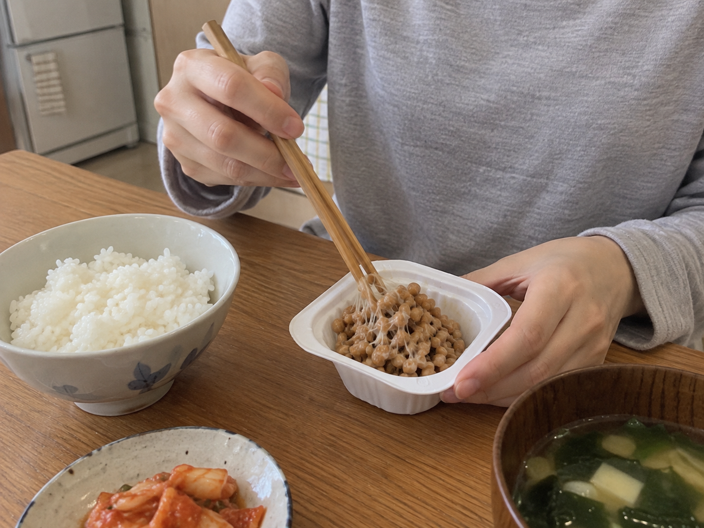
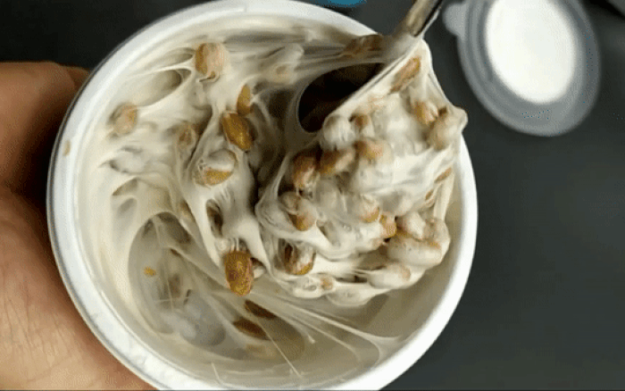
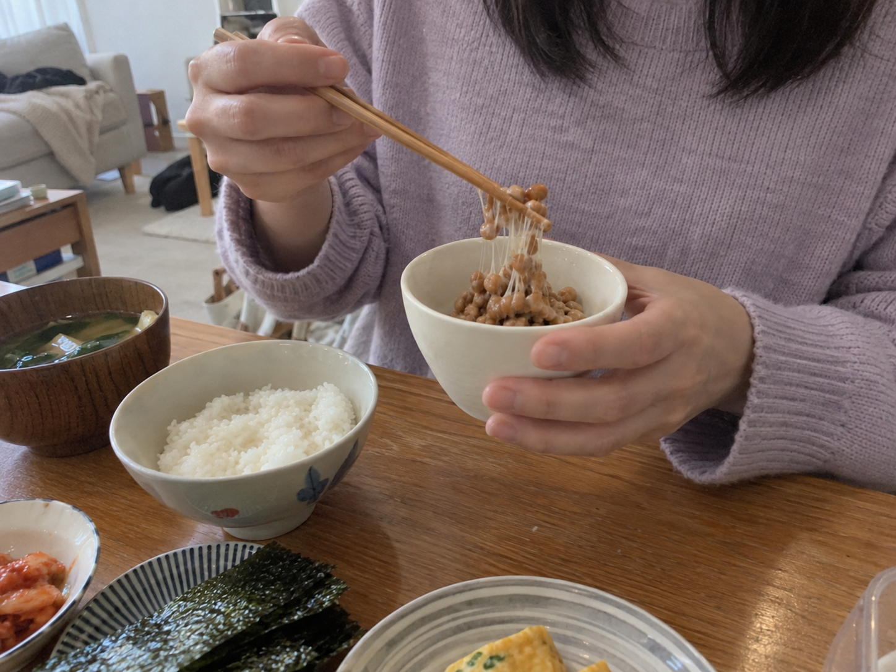
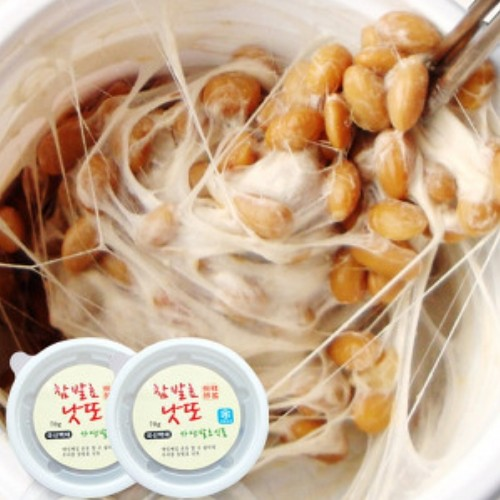
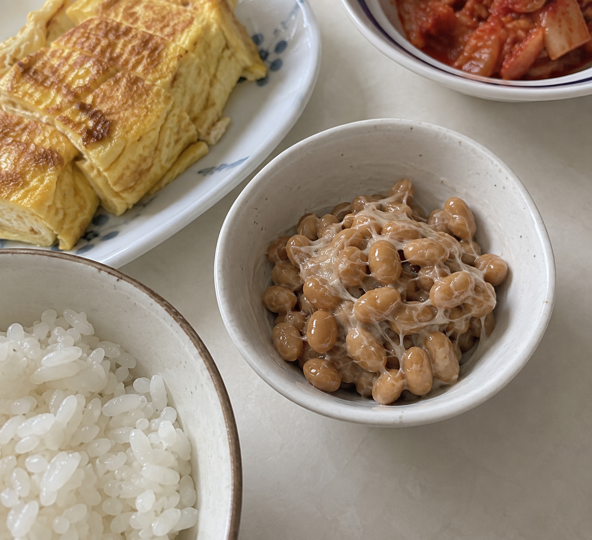

이 포스팅은 네이버 쇼핑 커넥트 활동의 일환으로, 판매 발생 시 수수료를 제공받습니다.
참발효낫또 국산콩 70g 24개, 아침에 하나씩 꺼낼 낫또

아침에는 먹을 메뉴가 정해져 있으면 준비가 빨라져요. 평소 낫또를 즐긴다면 큰 통에서 덜어 먹기보다 한 컵씩 준비하는 구성이 눈에 들어오죠.
참발효낫또는 국산콩으로 만든 70g 24개 상품이에요. 콩 원산지와 한 컵의 양을 함께 보는 분에게 조건이 분명한 구성이에요.
1. 국산콩 70g 한 컵

콩 원산지를 기준으로 식품을 고른다면 국산콩이라는 점부터 보면 돼요. 한 컵이 70g이라 평소 곁들이는 양과 맞는지도 쉽게 비교할 수 있어요.

낫또는 콩과 소스 선택에 따라 먹는 조합이 달라져요. 현재 주문할 콩 종류와 소스 옵션을 보고 익숙하게 먹는 방식에 맞춰 고르면 돼요.
(아침 메뉴 하나가 정해져 있으면 마음이 좀 편하죠.)
💚 국산콩·소스 옵션과 70g 컵 구성 보기2. 밥 옆에 곁들이기

밥에 김이나 달걀을 함께 두는 식으로 한 끼 구성을 정할 수 있어요. 매일 다른 반찬을 여러 개 만드는 대신 좋아하는 낫또를 한 컵 준비하는 방향이에요.
사진처럼 낫또를 섞는 동작과 먹을 그릇이 떠오르면 제품의 쓰임새가 분명해져요. 받은 상품은 안내된 보관·해동 방식에 맞춰 준비하면 돼요.
3. 24개 묶음 가격

확인해둔 표시 가격은 27,200원이에요. 24개로 나누면 상품가격 기준 한 개당 약 1,133원이에요.
자주 먹는 낫또라면 수량과 보관할 공간을 함께 보고 주문하세요. 아래에서 70g 컵 구성과 콩·소스 옵션을 펼쳐보면 아침에 꺼낼 메뉴가 정리돼요.
(자주 먹는 음식은 한 컵씩 준비하는 구성이 반가워요.)
낫또를 아침에 자주 먹는다면, 아래에서 국산콩 70g 컵과 좋아하는 소스 옵션을 골라보세요.
💚 참발효낫또 24개 가격·보관 안내 보기가격은 2026년 10월 6일 확인한 상품 표시 가격으로, 옵션·배송비·구매 시점에 따라 달라질 수 있어요.